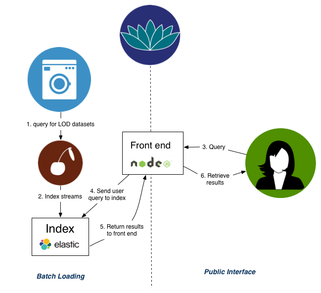

WAI
January 18th, 2015
Slides at http://wouterbeek.github.io
LOD Laundromat
The Clean Linked Data platform


- Decentralized → centralized
- SPARQL → LDF
“Follow your nose” on the SW

“Follow your nose” on LOD Laundromat

“A new development we observe is the building of a custom API on top of a SPARQL endpoint. A custom API ensures that only a small number of SPARQL patterns can be queried for. This significantly simplifies endpoint optimization. We do not think this is a good development. The deficiencies of the existing deployment paradigm should not result in the altogether abandonment of the idea of a machine-processable Web. Doing away with dereferenceability and SPARQL as the only or even main ways of disseminating Linked Open Data may be necessary to save the larger goal of creating a machine-processable Web.”
[IEEE Internet Computing, tbp]Semantic Web Layer Cake

LOD Laundromat Layer Cake
 [IEEE Internet Computing, tbp]
[IEEE Internet Computing, tbp]
Healthy markets exhibit allocative efficiency
The price a consumer pays equals the marginal cost of production.
Since a client pays nothing and the marginal cost of production is relatively high, the SPARQL paradigm is inherently far removed from allocative efficiency.
[IEEE Internet Computing, tbp]Datasets used in ISWC 2014 research track papers

17 datasets are used in total
1-6 datasets per article
2 datasets per article on average

L. Rietveld & W. Beek & S. Schlobach “LOD Lab: Experiments at LOD Scale” International Semantic Web Conference, 2015.
Frank
Federated Resource Architecture for Networked Knowledge

https://github.com/LOD-Laundromat/Frank
W. Beek & L. Rietveld. “Frank: The LOD Cloud at your Fingertips” Extended Semantic Web Conference: Developers Workshop, 2015.
LOTUS
 lotus.lodlaundromat.orgWhy literals?
- Concise notation for infinite value spaces.
- Encoding of linguistic/text-based content.
Why high-quality literals?
- Efficient computation through canonicity
- Data enrichment by improved instance matching
- User eXperience: language preference, “value labeling”
- Improve NLP tasks with background knowledge
W. Beek & F. Ilievski & J. Debattista & S. Schlobach Literally Better: Analyzing and Improving the Quality of Literals, under submission

W. Beek & F. Ilievski & J. Debattista & S. Schlobach Literally Better: Analyzing and Improving the Quality of Literals, under submission

W. Beek & F. Ilievski & J. Debattista & S. Schlobach Literally Better: Analyzing and Improving the Quality of Literals, under submission
“incremental, and lacking in innovation”
1.3
Is project acceptance an objective indicator of academic quality if success rate is only 1.3%? Or is it randomness? https://t.co/dIMKrBQGht
— Ruben Verborgh (@RubenVerborgh) January 12, 2016
Triply
Linked Business Data Deployed